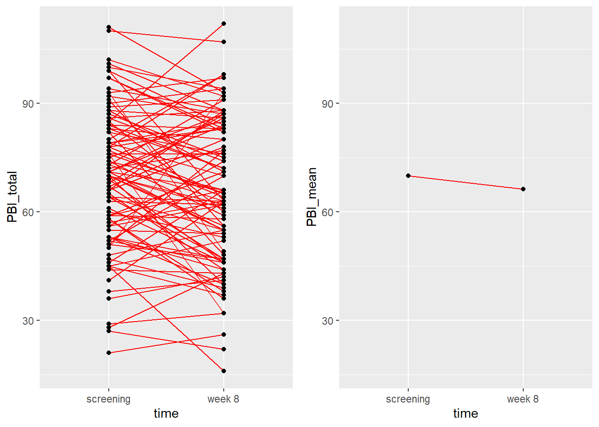
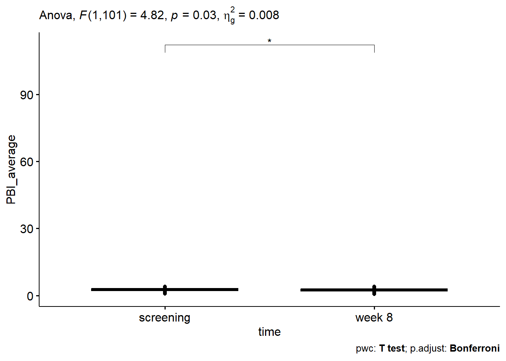
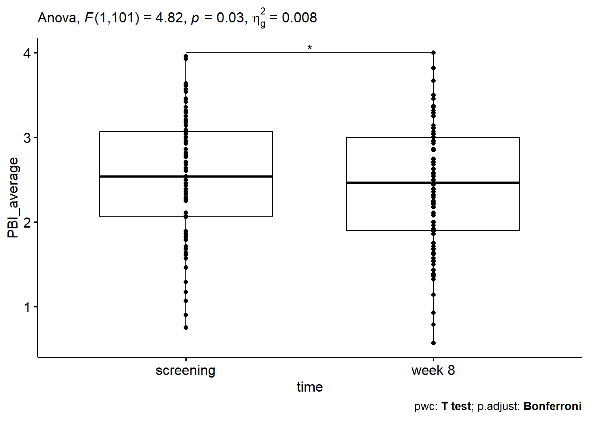

3/29/2022
Last updated: 2022-08-16
Checks: 6 1
Knit directory: Collaborations/
This reproducible R Markdown analysis was created with workflowr (version 1.7.0). The Checks tab describes the reproducibility checks that were applied when the results were created. The Past versions tab lists the development history.
The R Markdown file has unstaged changes. To know which version of
the R Markdown file created these results, you’ll want to first commit
it to the Git repo. If you’re still working on the analysis, you can
ignore this warning. When you’re finished, you can run
wflow_publish to commit the R Markdown file and build the
HTML.
Great job! The global environment was empty. Objects defined in the global environment can affect the analysis in your R Markdown file in unknown ways. For reproduciblity it’s best to always run the code in an empty environment.
The command set.seed(20210523) was run prior to running
the code in the R Markdown file. Setting a seed ensures that any results
that rely on randomness, e.g. subsampling or permutations, are
reproducible.
Great job! Recording the operating system, R version, and package versions is critical for reproducibility.
Nice! There were no cached chunks for this analysis, so you can be confident that you successfully produced the results during this run.
Great job! Using relative paths to the files within your workflowr project makes it easier to run your code on other machines.
Great! You are using Git for version control. Tracking code development and connecting the code version to the results is critical for reproducibility.
The results in this page were generated with repository version f19ea74. See the Past versions tab to see a history of the changes made to the R Markdown and HTML files.
Note that you need to be careful to ensure that all relevant files for
the analysis have been committed to Git prior to generating the results
(you can use wflow_publish or
wflow_git_commit). workflowr only checks the R Markdown
file, but you know if there are other scripts or data files that it
depends on. Below is the status of the Git repository when the results
were generated:
Ignored files:
Ignored: analysis/.Rhistory
Unstaged changes:
Modified: analysis/2022_Mar3_kate.Rmd
Note that any generated files, e.g. HTML, png, CSS, etc., are not included in this status report because it is ok for generated content to have uncommitted changes.
These are the previous versions of the repository in which changes were
made to the R Markdown (analysis/2022_Mar3_kate.Rmd) and
HTML (docs/2022_Mar3_kate.html) files. If you’ve configured
a remote Git repository (see ?wflow_git_remote), click on
the hyperlinks in the table below to view the files as they were in that
past version.
| File | Version | Author | Date | Message |
|---|---|---|---|---|
| Rmd | f19ea74 | Han | 2022-08-12 | 8/12/2022 |
| html | f19ea74 | Han | 2022-08-12 | 8/12/2022 |
| html | fa9131b | Han | 2022-08-03 | 8/3/2022 |
| Rmd | 9409a98 | Han | 2022-08-03 | 8/3/2022 |
| html | 9409a98 | Han | 2022-08-03 | 8/3/2022 |
| Rmd | f540ea7 | Han | 2022-08-02 | 8/2/2022 |
| html | f540ea7 | Han | 2022-08-02 | 8/2/2022 |
| html | 7912644 | Han | 2022-08-02 | 8/2/2022 |
| Rmd | 0f1670e | Han | 2022-08-01 | 8/1/2022 |
| html | 0f1670e | Han | 2022-08-01 | 8/1/2022 |
| Rmd | 44a1b26 | Han | 2022-07-29 | 7/29/2022 |
| html | 44a1b26 | Han | 2022-07-29 | 7/29/2022 |
| Rmd | b2f4960 | Han | 2022-07-22 | 7/22/2022 |
| html | b2f4960 | Han | 2022-07-22 | 7/22/2022 |
| Rmd | 3bab188 | Han | 2022-07-22 | 7/22/2022 |
| html | 3bab188 | Han | 2022-07-22 | 7/22/2022 |
| Rmd | b81de63 | Han | 2022-07-20 | 7/20/2022 |
| html | b81de63 | Han | 2022-07-20 | 7/20/2022 |
| Rmd | f707f62 | Han | 2022-07-15 | 7/15/2022 |
| html | f707f62 | Han | 2022-07-15 | 7/15/2022 |
| Rmd | ed1fdb9 | Han | 2022-07-15 | 7/15/2022 |
| html | ed1fdb9 | Han | 2022-07-15 | 7/15/2022 |
| Rmd | e9cf183 | Han | 2022-06-30 | 6/30/2022 |
| html | e9cf183 | Han | 2022-06-30 | 6/30/2022 |
| Rmd | 4170903 | Han | 2022-06-28 | 6/28/2022 |
| html | 4170903 | Han | 2022-06-28 | 6/28/2022 |
| Rmd | 3eea39b | Han | 2022-06-28 | 6/28/2022 |
| html | 3eea39b | Han | 2022-06-28 | 6/28/2022 |
| Rmd | 9e11222 | Han | 2022-06-22 | 6/22/2022 |
| html | 9e11222 | Han | 2022-06-22 | 6/22/2022 |
| Rmd | 78cfd00 | Han | 2022-06-09 | 6/9/2022 |
| html | 78cfd00 | Han | 2022-06-09 | 6/9/2022 |
| Rmd | 128e9dc | Han | 2022-05-13 | 5/13/2022 |
| html | 128e9dc | Han | 2022-05-13 | 5/13/2022 |
| Rmd | f3c6de7 | Han | 2022-05-12 | 5/12/2022 |
| html | f3c6de7 | Han | 2022-05-12 | 5/12/2022 |
PBI (papillary bleeding index)
trajectory plot
- measurements are taken at 2 time points,
PBI.Screening,PBI.8.wk, and are longitudinal data

summary statistics
# A tibble: 2 x 5
time variable n mean sd
<chr> <chr> <dbl> <dbl> <dbl>
1 screening PBI_total 102 70.0 19.0
2 week 8 PBI_total 102 66.2 20.4# A tibble: 2 x 5
time variable n mean sd
<chr> <chr> <dbl> <dbl> <dbl>
1 screening PBI_average 102 2.54 0.698
2 week 8 PBI_average 102 2.41 0.729boxplot
outlier detection
[1] time PBI_total PBI_average individual is.outlier is.extreme
<0 rows> (or 0-length row.names)[1] time PBI_total PBI_average individual is.outlier is.extreme
<0 rows> (or 0-length row.names)normality assumption
# A tibble: 2 x 4
time variable statistic p
<chr> <chr> <dbl> <dbl>
1 screening PBI_total 0.990 0.680
2 week 8 PBI_total 0.981 0.161# A tibble: 2 x 4
time variable statistic p
<chr> <chr> <dbl> <dbl>
1 screening PBI_average 0.987 0.439
2 week 8 PBI_average 0.985 0.282- all p values are bigger than 0.05, suggesting they are normally distributed.


- most points fall along reference line, normality assumption is reasonable.
ANOVA Table (type III tests)
Effect DFn DFd F p p<.05 ges
1 time 1 101 5.854 0.017 * 0.009ANOVA Table (type III tests)
Effect DFn DFd F p p<.05 ges
1 time 1 101 4.818 0.03 * 0.008anova_test repeated measures ANOVA
PBI: dependent variable
PIB are statistical different between screening and week 8 by small p value of 0.017.


3 clusters by PBI
group num_individual
1 PBI <2 post-treatment 32
2 PBI>=2 post-treatment 70
3 PBI >3 post-treatment 24difference at week 8
covariates pvalue
1 SAI 0.272783345
2 sRDI 0.473780454
3 SQI 0.163620069
4 Fragmentation 0.129902222
5 Cortisol.1 0.070280424
6 Cortisol.2 0.251863704
7 Cortisol.3 0.067272462
8 Cortisol.4 0.003661785
9 Total.Cortisol 0.010361663
10 BMI.kg.m2 0.395240935- compare PBI <2 post-treatment vs PBI >=2 post-treatment at week 8
- two sample t test is used
Cortisol
individual C.1, C.2, C.3, C.4
| \ | C.1 | C.2 | C.3 | C.4 |
|---|---|---|---|---|
| p value | 0.189 | 0.165 | 0.034 | 0.006 |
normal vs abnormal at each C.i
| Patient.ID.Number | Cortisol.1 |
|---|---|
| 1 | 10.4 |
| 2 | 8.1 |
| 3 | 8.1 |
| 4 | 6.9 |
| 7 | 6.6 |
| 8 | 5.3 |
| 11 | 8.2 |
| 12 | 9.8 |
| 14 | 7.8 |
| 15 | 5.3 |
| 16 | 8.6 |
| 18 | 11.0 |
| 19 | 10.1 |
| 20 | 6.8 |
| 21 | 9.0 |
| 22 | 8.2 |
| 25 | 6.5 |
| 26 | 8.3 |
| 27 | 7.8 |
| 33 | 10.4 |
| 41 | 9.6 |
| 54 | 9.2 |
| 55 | 8.5 |
| 59 | 7.2 |
| 60 | 6.3 |
| 61 | 5.2 |
| 63 | 9.0 |
| 65 | 7.5 |
| 66 | 9.6 |
| 67 | 5.3 |
| 70 | 5.5 |
| 72 | 5.2 |
| 73 | 8.9 |
| 81 | 8.3 |
| 84 | 10.1 |
| 87 | 8.2 |
| 88 | 6.9 |
| 91 | 5.7 |
| 92 | 5.7 |
| 94 | 6.0 |
| 95 | 9.3 |
| 98 | 9.2 |
| 100 | 6.2 |
| 102 | 9.6 |
| 103 | 6.1 |
| 106 | 10.9 |
| 107 | 8.3 |
| 108 | 10.4 |
| 109 | 10.5 |
| 113 | 8.5 |
| Patient.ID.Number | Cortisol.2 |
|---|---|
| 2 | 4.1 |
| 4 | 4.9 |
| 5 | 3.2 |
| 6 | 3.5 |
| 7 | 2.9 |
| 8 | 3.0 |
| 9 | 4.9 |
| 10 | 3.0 |
| 12 | 3.1 |
| 15 | 4.1 |
| 16 | 2.8 |
| 17 | 3.9 |
| 19 | 3.8 |
| 20 | 3.2 |
| 21 | 2.8 |
| 22 | 3.9 |
| 24 | 2.6 |
| 29 | 2.3 |
| 32 | 2.8 |
| 33 | 2.5 |
| 35 | 3.6 |
| 42 | 4.2 |
| 47 | 3.3 |
| 48 | 4.6 |
| 49 | 3.9 |
| 50 | 3.8 |
| 51 | 2.5 |
| 54 | 3.1 |
| 55 | 4.0 |
| 56 | 4.4 |
| 57 | 4.8 |
| 59 | 3.0 |
| 61 | 3.6 |
| 64 | 4.5 |
| 66 | 3.4 |
| 67 | 3.8 |
| 68 | 4.0 |
| 70 | 2.7 |
| 72 | 2.6 |
| 73 | 4.2 |
| 77 | 2.8 |
| 78 | 2.6 |
| 79 | 3.1 |
| 80 | 4.9 |
| 84 | 3.0 |
| 86 | 2.7 |
| 87 | 2.4 |
| 88 | 3.6 |
| 90 | 2.8 |
| 91 | 4.4 |
| 92 | 3.6 |
| 93 | 5.2 |
| 94 | 2.7 |
| 95 | 2.5 |
| 96 | 3.6 |
| 97 | 2.4 |
| 98 | 3.1 |
| 99 | 3.1 |
| 100 | 4.5 |
| 101 | 3.7 |
| 102 | 2.6 |
| 103 | 5.3 |
| 105 | 4.9 |
| 106 | 3.9 |
| 107 | 2.4 |
| 110 | 3.5 |
| 111 | 3.3 |
| 112 | 3.0 |
| 113 | 2.6 |
| Patient.ID.Number | Cortisol.3 |
|---|---|
| 1 | 1.4 |
| 2 | 1.7 |
| 3 | 1.5 |
| 7 | 1.9 |
| 8 | 1.5 |
| 9 | 1.3 |
| 11 | 1.6 |
| 12 | 1.5 |
| 17 | 1.8 |
| 18 | 1.1 |
| 22 | 1.2 |
| 24 | 1.8 |
| 25 | 1.2 |
| 27 | 1.1 |
| 29 | 1.4 |
| 32 | 2.4 |
| 33 | 1.8 |
| 34 | 1.7 |
| 40 | 1.5 |
| 41 | 1.5 |
| 44 | 1.6 |
| 45 | 2.1 |
| 47 | 2.0 |
| 49 | 1.7 |
| 50 | 2.3 |
| 51 | 1.2 |
| 53 | 1.2 |
| 55 | 2.4 |
| 60 | 1.3 |
| 61 | 1.1 |
| 66 | 1.1 |
| 70 | 2.2 |
| 73 | 2.1 |
| 75 | 1.7 |
| 77 | 1.8 |
| 82 | 2.0 |
| 84 | 1.9 |
| 87 | 1.0 |
| 91 | 1.2 |
| 92 | 1.7 |
| 93 | 1.8 |
| 94 | 1.1 |
| 95 | 1.7 |
| 99 | 2.0 |
| 106 | 1.0 |
| 113 | 1.6 |
| Patient.ID.Number | Cortisol.4 |
|---|---|
| 1 | 1.2 |
| 2 | 1.9 |
| 5 | 0.6 |
| 6 | 1.1 |
| 8 | 1.4 |
| 9 | 1.0 |
| 10 | 1.7 |
| 11 | 1.8 |
| 12 | 0.7 |
| 13 | 0.6 |
| 15 | 1.4 |
| 16 | 1.0 |
| 18 | 0.6 |
| 19 | 1.1 |
| 21 | 1.5 |
| 22 | 1.1 |
| 24 | 1.3 |
| 25 | 0.6 |
| 26 | 2.0 |
| 29 | 0.8 |
| 32 | 1.3 |
| 33 | 0.8 |
| 34 | 1.5 |
| 35 | 0.4 |
| 41 | 1.7 |
| 42 | 1.0 |
| 43 | 1.0 |
| 45 | 0.9 |
| 47 | 2.0 |
| 48 | 1.6 |
| 49 | 0.8 |
| 50 | 1.9 |
| 51 | 0.5 |
| 53 | 0.8 |
| 54 | 0.7 |
| 55 | 1.6 |
| 56 | 1.2 |
| 57 | 1.7 |
| 58 | 0.7 |
| 59 | 1.2 |
| 60 | 0.6 |
| 61 | 1.2 |
| 62 | 0.7 |
| 63 | 0.6 |
| 64 | 0.7 |
| 65 | 1.7 |
| 67 | 0.8 |
| 70 | 0.6 |
| 71 | 2.1 |
| 72 | 1.0 |
| 73 | 0.8 |
| 75 | 1.9 |
| 77 | 0.7 |
| 78 | 1.8 |
| 79 | 1.2 |
| 81 | 1.0 |
| 82 | 1.0 |
| 84 | 1.1 |
| 86 | 1.3 |
| 88 | 1.7 |
| 89 | 1.9 |
| 90 | 1.1 |
| 91 | 0.4 |
| 93 | 1.8 |
| 94 | 0.7 |
| 95 | 0.4 |
| 96 | 1.0 |
| 98 | 1.4 |
| 99 | 0.9 |
| 100 | 1.4 |
| 101 | 1.0 |
| 102 | 1.3 |
| 103 | 0.7 |
| 105 | 1.2 |
| 107 | 1.3 |
| 108 | 2.0 |
| 109 | 1.5 |
| 110 | 1.1 |
| 111 | 2.0 |
| 112 | 0.8 |
| 113 | 1.2 |
| Patient.ID.Number | Cortisol.1 | Cortisol.2 | Cortisol.3 | Cortisol.4 |
|---|---|---|---|---|
| 2 | 8.1 | 4.1 | 1.7 | 1.9 |
| 8 | 5.3 | 3.0 | 1.5 | 1.4 |
| 9 | 11.5 | 4.9 | 1.3 | 1.0 |
| 12 | 9.8 | 3.1 | 1.5 | 0.7 |
| 22 | 8.2 | 3.9 | 1.2 | 1.1 |
| 32 | 11.2 | 2.8 | 2.4 | 1.3 |
| 33 | 10.4 | 2.5 | 1.8 | 0.8 |
| 55 | 8.5 | 4.0 | 2.4 | 1.6 |
| 61 | 5.2 | 3.6 | 1.1 | 1.2 |
| 70 | 5.5 | 2.7 | 2.2 | 0.6 |
| 73 | 8.9 | 4.2 | 2.1 | 0.8 |
| 77 | 11.3 | 2.8 | 1.8 | 0.7 |
| 84 | 10.1 | 3.0 | 1.9 | 1.1 |
| 91 | 5.7 | 4.4 | 1.2 | 0.4 |
| 94 | 6.0 | 2.7 | 1.1 | 0.7 |
| 95 | 9.3 | 2.5 | 1.7 | 0.4 |
| 113 | 8.5 | 2.6 | 1.6 | 1.2 |
individuals in normal and abnormal group
| \ | C.1 (5.1 - 11.1) | C.2 (2.3 - 5.3) | C.3 (1.0 - 2.4) | C.4 (0.4 - 2.1) |
|---|---|---|---|---|
| normal | 50 | 69 | 46 | 81 |
| abnormal | 72 | 33 | 56 | 21 |
there are 14 individuals with normal cortisols across 4 timepoints.
C.i–>C.i+1
| \ | C.1–>C.2 | C.2–>C.3 | C.3–>C.4 |
|---|---|---|---|
| p value | 0.939 | 0.486 | 0.800 |
first calculate Z scores for cortisol
then use two sample t test to compare the change difference between two groups PBI <=2 post-treatment vs PBI >2 post-treatment.
C.i+1/C.i for normalized cortisol
| \ | C.2/C.1 | C.3/C.2 | C.4/C.3 |
|---|---|---|---|
| p value | 0.347 | 0.149 | 0.136 |
first calculate Z scores for cortisol
compute the ratio of C.i+1/C.i, this ratio could be negative due to normalization step
then use two sample t test to compare the change ratio between two groups PBI <2 post-treatment vs PBI >=2 post-treatment.
C.i+1/C.i for raw cortisol
| \ | C.2/C.1 | C.3/C.2 | C.4/C.3 |
|---|---|---|---|
| p value | 0.725 | 0.228 | 0.006 |
compute the ratio of C.i+1/C.i for raw data, a number between 0 and 1.
then use two sample t test to compare the change ratio between two groups PBI <2 post-treatment vs PBI >=2 post-treatment.
Response profile analysis

Denom. DF: 404
numDF F-value p-value
(Intercept) 1 0.000000 1.0000
treatment 1 6.301579 0.0125
time 1 0.000000 1.0000
treatment:time 1 0.528258 0.4678- group 1:
Average.PBI.Score.8.week <2and group 2:Average.PBI.Score.8.week>=2 - p value of 0.4678 for treatment X time interaction indicates lack of interaction.
three groups by SAI
- three groups: group 1:
SAI<5; group 2:SAI>=5 & SAI<=14; group 3:SAI>14
test cortisol group by time interaction
Denom. DF: 402
numDF F-value p-value
(Intercept) 1 278.40184 <.0001
treatment 2 0.76101 0.4679
time 1 107.96648 <.0001
treatment:time 2 2.41870 0.0903- use normalized cortisol values and no overall group by time interaction due to p value of 0.0903
- use cortisol raw values
test cortisol group difference at every time point
[1] 0.19138209 0.07793339 0.49658197 0.54966145- use cortisol raw values
- no statistical difference at every time point from above p values
PBI at week 8 for three groups
Analysis of Variance Table
Response: PBI_week8
Df Sum Sq Mean Sq F value Pr(>F)
groups 2 1.389 0.69448 1.3163 0.2728
Residuals 99 52.231 0.52758 - use average PBI
- group averages are group 1: 2.58; group 2: 2.34; group3: 2.33
- p value of 0.2728 indicates no statistical difference
SQI for 3 groups
Analysis of Variance Table
Response: SQI
Df Sum Sq Mean Sq F value Pr(>F)
groups 2 14911 7455.5 52.111 3.463e-16 ***
Residuals 99 14164 143.1
---
Signif. codes: 0 '***' 0.001 '**' 0.01 '*' 0.05 '.' 0.1 ' ' 1average SQI: group 1: 67.21; group 2: 51.39; group 3: 38.18
p value of
3.463e-16indicates strong evidence of group difference
two groups by sAHI
- two groups: group 1:
sAHI<5; group 2:sAHI>=5
test cortisol group by time interaction
Denom. DF: 280
numDF F-value p-value
(Intercept) 1 232.38839 <.0001
treatment 1 1.89271 0.1700
time 1 31.67358 <.0001
treatment:time 1 0.13492 0.7137- use normalized cortisol values and no overall group by time interaction due to p value of 0.7137
- use cortisol raw values
test cortisol group difference at every time point
[1] 0.7940903 0.1569729 0.9382148 0.2776449- use cortisol raw values
- no statistical difference at every time point from above p values
PBI at week 8 for 2 groups
Analysis of Variance Table
Response: PBI_week8
Df Sum Sq Mean Sq F value Pr(>F)
groups 1 0.033 0.03336 0.0682 0.7947
Residuals 69 33.737 0.48894 - use average PBI
- group averages are group 1: 2.29; group 2: 2.34; group3: 2.33
- p value of 0.7947 indicates no statistical difference
SQI for 2 groups
Analysis of Variance Table
Response: SQI
Df Sum Sq Mean Sq F value Pr(>F)
groups 1 2527.8 2527.80 9.5852 0.002834 **
Residuals 69 18196.6 263.72
---
Signif. codes: 0 '***' 0.001 '**' 0.01 '*' 0.05 '.' 0.1 ' ' 1average SQI: group 1: 54.82; group 2: 51.39; group 3: 42.88
p value of
0.0028indicates strong evidence of group difference
Figures
Figure 3 Epworth Scale Scoring (ESS) and STOP-BANG results compared with sAHI scores.
num_participants=numeric()
average_sAHI=numeric()
num_participants[1]=data%>%filter(Patient.ID.Number>=40 & Epworth.Score>=0 & Epworth.Score<=5) %>%nrow
average_sAHI[1]=mean(data%>%filter(Patient.ID.Number>=40 &Epworth.Score>=0 & Epworth.Score<=5) %>% select(sAHI) %>% pull, na.rm=T)
num_participants[2]=data%>%filter(Patient.ID.Number>=40 & Epworth.Score>=6 & Epworth.Score<=10) %>%nrow
average_sAHI[2]=mean(data%>%filter(Patient.ID.Number>=40 & Epworth.Score>=6 & Epworth.Score<=10) %>% select(sAHI) %>% pull, na.rm=T)
num_participants[3]=data%>%filter(Patient.ID.Number>=40 & Epworth.Score>=11 & Epworth.Score<=12) %>%nrow
average_sAHI[3]=mean(data%>%filter(Patient.ID.Number>=40 & Epworth.Score>=11 & Epworth.Score<=12) %>% select(sAHI) %>% pull, na.rm=T)
num_participants[4]=data%>%filter(Patient.ID.Number>=40 & Epworth.Score>=13 & Epworth.Score<=15) %>%nrow
average_sAHI[4]=mean(data%>%filter(Patient.ID.Number>=40 & Epworth.Score>=13 & Epworth.Score<=15) %>% select(sAHI) %>% pull, na.rm=T)
num_participants[5]=data%>%filter(Patient.ID.Number>=40 & Epworth.Score>=16 & Epworth.Score<=24) %>%nrow
average_sAHI[5]=mean(data%>%filter(Patient.ID.Number>=40 & Epworth.Score>=16 & Epworth.Score<=24) %>% select(sAHI) %>% pull, na.rm=T)
knitr::kable(data.frame(Epworth_score=c("0-5", "6-10", "11-12", "13-15", "16-24"), sleepiness_severity=c("lower normal", "higher normal", "mild excessive", "moderate excessive", "severe"), num_participants=num_participants, Average_sAHI=round(average_sAHI,2)), "pipe")| Epworth_score | sleepiness_severity | num_participants | Average_sAHI |
|---|---|---|---|
| 0-5 | lower normal | 46 | 4.85 |
| 6-10 | higher normal | 17 | 11.94 |
| 11-12 | mild excessive | 6 | 11.50 |
| 13-15 | moderate excessive | 0 | NaN |
| 16-24 | severe | 2 | 8.00 |
- ID>=40, 71 participates in total.
- boundary value are included,
e.g.
Epworth.Score>=0 & Epworth.Score<=5
ID40_plus_SB=data=as_tibble(read.csv("C:\\Shengtong\\Research\\AllCollaboration\\2022\\202203\\Kate\\ID40+SB.csv", header=T))
num_participants=numeric()
average_sAHI=numeric()
num_participants[1]=data%>%filter(Patient.ID.Number>=40 & STOP.BANG.total>=0 & STOP.BANG.total<=2) %>%nrow
average_sAHI[1]=mean(data%>%filter(Patient.ID.Number>=40 &STOP.BANG.total>=0 & STOP.BANG.total<=2) %>% select(sAHI) %>% pull, na.rm=T)
num_participants[2]=data%>%filter(Patient.ID.Number>=40 & STOP.BANG.total>=3 & STOP!=2 & STOP.BANG.total<=4 & BMI.kg.m2 <35) %>%nrow
average_sAHI[2]=mean(data%>%filter(Patient.ID.Number>=40 & STOP.BANG.total>=3 & STOP!=2 & STOP.BANG.total<=4 & BMI.kg.m2 <35) %>% select(sAHI) %>% pull, na.rm=T)
num_participants[3]=data%>%filter(Patient.ID.Number>=40 & STOP.BANG.total>=5 & STOP.BANG.total<=8) %>%nrow
average_sAHI[3]=mean(data%>%filter(Patient.ID.Number>=40 & STOP.BANG.total>=5 & STOP.BANG.total<=8) %>% select(sAHI) %>% pull, na.rm=T)
num_participants[4]=data%>%filter(Patient.ID.Number>=40 & STOP.BANG.total>=3 & STOP.BANG.total<=4 & STOP==2 & Remarks.A..Gender=="M" ) %>%nrow
average_sAHI[4]=mean(data%>%filter(Patient.ID.Number>=40 & STOP.BANG.total>=3 & STOP.BANG.total<=4 & STOP==2 & Remarks.A..Gender=="M") %>% select(sAHI) %>% pull, na.rm=T)
num_participants[5]=data%>%filter(Patient.ID.Number>=40 & STOP.BANG.total>=3 & STOP.BANG.total<=4 & STOP==2 & BMI.kg.m2 >35) %>%nrow
average_sAHI[5]=mean(data%>%filter(Patient.ID.Number>=40 & STOP.BANG.total>=3 & STOP.BANG.total<=4 & STOP==2 & BMI.kg.m2 >35) %>% select(sAHI) %>% pull, na.rm=T)
################
# check the patient set
# all=data%>%filter(Patient.ID.Number>=40 & STOP.BANG.total>=3 & STOP.BANG.total<=4) %>% select(Patient.ID.Number, STOP, STOP.BANG.total, Remarks.A..Gender, BMI.kg.m2) %>% select(Patient.ID.Number) %>% pull()
# x1=data%>%filter(Patient.ID.Number>=40 & STOP.BANG.total>=3 & STOP.BANG.total<=4 & Remarks.A..Gender=="F" & BMI.kg.m2 <35) %>% select(Patient.ID.Number) %>% pull
# x2=data%>%filter(Patient.ID.Number>=40 & STOP.BANG.total>=3 & STOP.BANG.total<=4 & STOP==2 & Remarks.A..Gender=="M" )%>% select(Patient.ID.Number) %>% pull
# x3=data%>%filter(Patient.ID.Number>=40 & STOP.BANG.total>=3 & STOP.BANG.total<=4 & STOP==2 & BMI.kg.m2 >35) %>% select(Patient.ID.Number) %>% pull
# setdiff(all, union(union(x1, x2), x3))
knitr::kable(data.frame(Number_of_yes_response=c("0-2", "3-4", "5-8", "2 STOP+MALE GENDER", "2 STOP+bmi>35"), STOP_BANG_OSA_risk=c("low", "intermediate", "high", "high", "high"), num_participants=num_participants, Average_sAHI=round(average_sAHI,2)), "pipe")| Number_of_yes_response | STOP_BANG_OSA_risk | num_participants | Average_sAHI |
|---|---|---|---|
| 0-2 | low | 57 | 6.33 |
| 3-4 | intermediate | 6 | 11.33 |
| 5-8 | high | 3 | 11.00 |
| 2 STOP+MALE GENDER | high | 3 | 11.67 |
| 2 STOP+bmi>35 | high | 2 | 7.00 |
- ID>=40
- boundary value are included
- low:
STOP.BANG.total>=0 & STOP.BANG.total<=2 - intermediate:
STOP.BANG.total>=3 & STOP.BANG.total<=4 & STOP!=2 & BMI.kg.m2 <35
Figure 4 sAHI and Epworth Sleepiness Score averages and comparison.
num_participants=numeric()
average_sAHI=numeric()
num_participants[1]=data%>%filter(Patient.ID.Number>=40 & Epworth.Score>=0 & Epworth.Score<=5 & sAHI>=5) %>%nrow
average_sAHI[1]=mean(data%>%filter(Patient.ID.Number>=40 & Epworth.Score>=0 & Epworth.Score<=5 & sAHI>=5) %>% select(sAHI) %>% pull, na.rm=T)
num_participants[2]=data%>%filter(Patient.ID.Number>=40 & Epworth.Score>=6 & Epworth.Score<=10 & sAHI>=5) %>%nrow
average_sAHI[2]=mean(data%>%filter(Patient.ID.Number>=40 & Epworth.Score>=6 & Epworth.Score<=10 & sAHI>=5) %>% select(sAHI) %>% pull, na.rm=T)
num_participants[3]=data%>%filter(Patient.ID.Number>=40 & Epworth.Score>=11 & Epworth.Score<=12 & sAHI>=5) %>%nrow
average_sAHI[3]=mean(data%>%filter(Patient.ID.Number>=40 & Epworth.Score>=11 & Epworth.Score<=12 & sAHI>=5) %>% select(sAHI) %>% pull, na.rm=T)
num_participants[4]=data%>%filter(Patient.ID.Number>=40 & Epworth.Score>=13 & Epworth.Score<=15 & sAHI>=5) %>%nrow
average_sAHI[4]=mean(data%>%filter(Patient.ID.Number>=40 & Epworth.Score>=13 & Epworth.Score<=15 & sAHI>=5) %>% select(sAHI) %>% pull, na.rm=T)
num_participants[5]=data%>%filter(Patient.ID.Number>=40 & Epworth.Score>=16 & Epworth.Score<=24 & sAHI>=5) %>%nrow
average_sAHI[5]=mean(data%>%filter(Patient.ID.Number>=40 & Epworth.Score>=16 & Epworth.Score<=24 & sAHI>=5) %>% select(sAHI) %>% pull, na.rm=T)
knitr::kable(data.frame(Epworth_score=c("0-5", "6-10", "11-12", "13-15", "16-24"), sleepiness_severity=c("lower normal", "higher normal", "mild excessive", "moderate excessive", "severe"), num_participants_sAHI_larger_than5=num_participants, Average_sAHI=round(average_sAHI,2)), "pipe")| Epworth_score | sleepiness_severity | num_participants_sAHI_larger_than5 | Average_sAHI |
|---|---|---|---|
| 0-5 | lower normal | 16 | 10.69 |
| 6-10 | higher normal | 9 | 21.11 |
| 11-12 | mild excessive | 6 | 11.50 |
| 13-15 | moderate excessive | 0 | NaN |
| 16-24 | severe | 2 | 8.00 |
- ID>=40
- boundary value are included
Welch Two Sample t-test
data: Epworth1 and Epworth2
t = 2.144, df = 43.567, p-value = 0.03765
alternative hypothesis: true difference in means is not equal to 0
95 percent confidence interval:
0.1165816 3.7861298
sample estimates:
mean of x mean of y
6.030303 4.078947 - p value of 0.038< 5% indicates Epworth between group
sAHI>=5andsAHI<5are statistically different.
Figure 5 STOP-BANG scoring for patients with an sAHI >=5. 27/33 (81.81%) patients were not correctly flagged for a “High Risk” of OSA.
num_participants=numeric()
average_sAHI=numeric()
num_participants[1]=data%>%filter(Patient.ID.Number>=40 & STOP>=0 & STOP<=2 & sAHI>=5) %>%nrow
average_sAHI[1]=mean(data%>%filter(Patient.ID.Number>=40 &STOP>=0 & STOP<=2 & sAHI>=5) %>% select(sAHI) %>% pull, na.rm=T)
num_participants[2]=data%>%filter(Patient.ID.Number>=40 & STOP>=3 & STOP<=4 & sAHI>=5) %>%nrow
average_sAHI[2]=mean(data%>%filter(Patient.ID.Number>=40 & STOP>=3 & STOP<=4 & sAHI>=5) %>% select(sAHI) %>% pull, na.rm=T)
num_participants[3]=data%>%filter(Patient.ID.Number>=40 & STOP>=5 & STOP<=8 & sAHI>=5) %>%nrow
average_sAHI[3]=mean(data%>%filter(Patient.ID.Number>=40 & STOP>=5 & STOP<=8 & sAHI>=5) %>% select(sAHI) %>% pull, na.rm=T)
num_participants[4]=data%>%filter(Patient.ID.Number>=40 & STOP==2 & Remarks.A..Gender=="M" & sAHI>=5 ) %>%nrow
average_sAHI[4]=mean(data%>%filter(Patient.ID.Number>=40 & STOP==2 & Remarks.A..Gender=="M" & sAHI>=5 ) %>% select(sAHI) %>% pull, na.rm=T)
num_participants[5]=data%>%filter(Patient.ID.Number>=40 & STOP==2 & BMI.kg.m2 >35 & sAHI>=5) %>%nrow
average_sAHI[5]=mean(data%>%filter(Patient.ID.Number>=40 & STOP==2 & BMI.kg.m2 >35 & sAHI>=5) %>% select(sAHI) %>% pull, na.rm=T)
knitr::kable(data.frame(Number_of_yes_response=c("0-2", "3-4", "5-8", "2 STOP+MALE GENDER", "2 STOP+bmi>35"), STOP_BANG_OSA_risk=c("low", "intermediate", "high", "high", "high"), num_participants=num_participants, Average_sAHI=round(average_sAHI,2)), "pipe")| Number_of_yes_response | STOP_BANG_OSA_risk | num_participants | Average_sAHI |
|---|---|---|---|
| 0-2 | low | 28 | 13.46 |
| 3-4 | intermediate | 5 | 13.80 |
| 5-8 | high | 0 | NaN |
| 2 STOP+MALE GENDER | high | 3 | 13.67 |
| 2 STOP+bmi>35 | high | 3 | 9.33 |
- ID>=40
- boundary value are included
sAHI>=5
Figure 6 BMI compared with sAHI.
num_participants=numeric()
average_BMI=numeric()
num_participants[1]=data%>%filter(Patient.ID.Number>=40 ) %>%nrow
average_BMI[1]=mean(data%>%filter(Patient.ID.Number>=40) %>% select(BMI.kg.m2) %>% pull, na.rm=T)
num_participants[2]=data%>%filter(Patient.ID.Number>=40 & sAHI<5) %>%nrow
average_BMI[2]=mean(data%>%filter(Patient.ID.Number>=40 & sAHI<5) %>% select(BMI.kg.m2) %>% pull, na.rm=T)
num_participants[3]=data%>%filter(Patient.ID.Number>=40 & sAHI>=5) %>%nrow
average_BMI[3]=mean(data%>%filter(Patient.ID.Number>=40 & sAHI>=5) %>% select(BMI.kg.m2) %>% pull, na.rm=T)
num_participants[4]=data%>%filter(Patient.ID.Number>=40 & sAHI>=15) %>%nrow
average_BMI[4]=mean(data%>%filter(Patient.ID.Number>=40 & sAHI>=15) %>% select(BMI.kg.m2) %>% pull, na.rm=T)
knitr::kable(data.frame(Epworth_score=c(" all participants", "sAHI<5", "sAHI>=5", "sAHI>=15"), num_participants=num_participants, Average_BMI=round(average_BMI,2)), "pipe")| Epworth_score | num_participants | Average_BMI |
|---|---|---|
| all participants | 71 | 25.82 |
| sAHI<5 | 38 | 24.52 |
| sAHI>=5 | 33 | 27.31 |
| sAHI>=15 | 9 | 27.68 |
Figure 8
data%>%filter(Patient.ID.Number>=40 ) %>%nrow # No. participants [1] 71data%>%filter(Patient.ID.Number>=40 & sAHI>=5 ) %>%nrow # No. participants with sAHI>=5[1] 33data%>%filter(Patient.ID.Number>=40 & sAHI>=5 & Average.PBI.Score.8.week >2) %>%nrow # No. participants with sAHI>=5 & high risk individual with PBI>2[1] 20data%>%filter(Patient.ID.Number>=40 & sAHI>=5 & STOP.BANG.total>=5) %>%nrow # No. participants with sAHI>=5 & high risk individual with STOP-BANG>=5[1] 3BMI comparison
Welch Two Sample t-test
data: BMI_group1 and BMI_group2
t = -2.2986, df = 63.829, p-value = 0.02482
alternative hypothesis: true difference in means is not equal to 0
95 percent confidence interval:
-5.2219019 -0.3654984
sample estimates:
mean of x mean of y
24.51842 27.31212 - the BMI difference between
sAHI<5andsAHI>=5is significant with p value of 0.02 - the mean of
sAHI<5is 24.52 andsAHI>=5is 27.32.
statistical software
_
platform x86_64-w64-mingw32
arch x86_64
os mingw32
system x86_64, mingw32
status
major 4
minor 1.2
year 2021
month 11
day 01
svn rev 81115
language R
version.string R version 4.1.2 (2021-11-01)
nickname Bird Hippie
sessionInfo()R version 4.1.2 (2021-11-01)
Platform: x86_64-w64-mingw32/x64 (64-bit)
Running under: Windows 10 x64 (build 18363)
Matrix products: default
locale:
[1] LC_COLLATE=English_United States.1252
[2] LC_CTYPE=English_United States.1252
[3] LC_MONETARY=English_United States.1252
[4] LC_NUMERIC=C
[5] LC_TIME=English_United States.1252
attached base packages:
[1] stats graphics grDevices utils datasets methods base
other attached packages:
[1] nlme_3.1-153 foreign_0.8-81 rstatix_0.7.0 kableExtra_1.3.4
[5] ggpubr_0.4.0 forcats_0.5.1 stringr_1.4.0 dplyr_1.0.7
[9] purrr_0.3.4 readr_2.1.1 tidyr_1.1.4 tibble_3.1.6
[13] ggplot2_3.3.5 tidyverse_1.3.1
loaded via a namespace (and not attached):
[1] httr_1.4.2 sass_0.4.1 jsonlite_1.7.3 viridisLite_0.4.0
[5] carData_3.0-5 modelr_0.1.8 bslib_0.3.1 assertthat_0.2.1
[9] highr_0.9 cellranger_1.1.0 yaml_2.2.2 lattice_0.20-45
[13] pillar_1.6.5 backports_1.4.1 glue_1.6.0 digest_0.6.29
[17] promises_1.2.0.1 ggsignif_0.6.3 rvest_1.0.2 colorspace_2.0-2
[21] cowplot_1.1.1 htmltools_0.5.2 httpuv_1.6.5 pkgconfig_2.0.3
[25] broom_0.7.11 haven_2.4.3 scales_1.1.1 webshot_0.5.2
[29] svglite_2.0.0 whisker_0.4 later_1.3.0 tzdb_0.2.0
[33] git2r_0.29.0 farver_2.1.0 generics_0.1.1 car_3.0-12
[37] ellipsis_0.3.2 withr_2.4.3 cli_3.1.1 magrittr_2.0.1
[41] crayon_1.4.2 readxl_1.3.1 evaluate_0.14 fs_1.5.2
[45] fansi_1.0.2 xml2_1.3.3 tools_4.1.2 hms_1.1.1
[49] lifecycle_1.0.1 munsell_0.5.0 reprex_2.0.1 compiler_4.1.2
[53] jquerylib_0.1.4 systemfonts_1.0.3 rlang_0.4.12 grid_4.1.2
[57] rstudioapi_0.13 labeling_0.4.2 rmarkdown_2.11 gtable_0.3.0
[61] abind_1.4-5 DBI_1.1.2 R6_2.5.1 lubridate_1.8.0
[65] knitr_1.37 fastmap_1.1.0 utf8_1.2.2 workflowr_1.7.0
[69] rprojroot_2.0.2 stringi_1.7.6 Rcpp_1.0.8 vctrs_0.3.8
[73] dbplyr_2.1.1 tidyselect_1.1.1 xfun_0.29